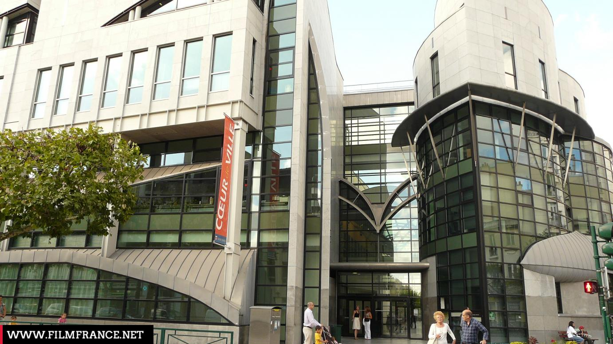
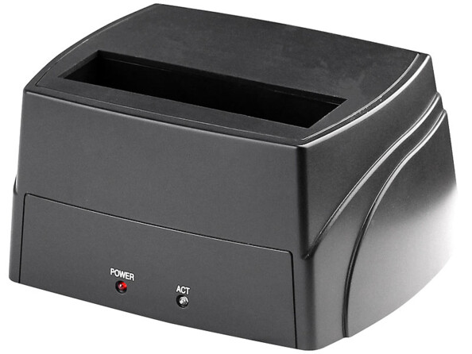

STAGE
Ici vous allez voir les différent projet et mission que j'ai réaliser en Stage au sein de l'espace informatique de Vincennes
Présentation de l'entreprise
L'espace informatique de vincennes est une entreprise crée par la mairie de vincennes en 2009, cet entreprise diriger par David Chemla a pour but de proposer des formation financé par un compte cpf ou l'afc (Actions de formation conventionnées) à travers l'informatique (Javascript, HTML, CSS, Python), le montage vidéo (Adobe Premuim, Capcut) ou des formations bureautique (World, Excel ,Powerpoint, Outlook).
Mission réaliser en stage
Mission Simple
Lors de mes premiers jours au sein de l'entreprise, mon tuteur n'avait pas réellement de grandes missions à me confier, car il souhaitait probablement que je m'adapte progressivement à mon nouvel environnement de travail. Par conséquent, il m'a attribué des tâches relativement simples, destinées à me familiariser avec les outils, les processus et les attentes de l'équipe. Ces missions incluaient notamment des activités telles que :
Vérifiation de Disque Dur
Lors de mes premiers jours, ma mission consistait principalement à vérifier le bon fonctionnement des disques durs. Une fois cette étape terminée, je devais les classer en utilisant une station d'accueil conçue spécialement pour les disques durs. Ce processus avait pour objectif de préparer les disques pour une étape ultérieure, qui impliquait leur formatage dans le cadre des besoins du projet futur.
Voici la station d'accueil qui ma permit d'effectuer cette mission :
Installation de systéme d'exploitation
Dans cette mission j'ai du installer différent systéme d'exploitation sur des PC qui en avait pas ou dans des PC qui avait des version trop ancienne grace a des clé USB qui était deja booté dans il y'avait des systéme d'exploitation tel que (Ubuntu, Windows, etc...) Voici quelque PC:
Mission Avancé
Dans cette Mission le but était de créer un serveur synchroniser avec nos différent dossier tel que photos ou document disponible sur l'Applications explorateur de fichiers et de pouvoir y mettre tout type de contenue a l'interieur a partir de n'importe quel ordinateur disponible dans l'espace informatique.
Voici la documentation du projet réaliser
Mission réalisée en stage (2ème année)
Explication du projet
Explication :
Le but du projet était de sécuriser un site web (ProAppli), un site créé par mon tuteur de stage, qui permet de gérer des utilisateurs, créer des formulaires d'inscription, Créer des certification etc. Elle utilisé par d'autre entreprise de Vincennes tel que la Clinique vétérinaire du Château - Vincennes, etc ...
Explication du code :
Ici, le but était que je comprenne le code afin d'y effectuer des modifications. Pour cela, je devais ajouter des commentaires au-dessus de chaque fonction, en précisant les paramètres qu'elles prenaient et ce qu'elles retournaient.
Découvert de faille sur ProAppli :
Dans le cadre de cette mission, j'étais chargé de scanner les pages "index" et "login" du site à l'aide de l'outil Nikto. L'objectif était d'identifier et d'analyser les différentes vulnérabilités présentes sur ces pages. Ce processus m'a permis d'obtenir un rapport détaillé des vulnérabilités à corriger pour renforcer la sécurité globale du site.
Correction de faille sur différente page (ProAppli) :
Dans cette mission, l'objectif était de corriger les différentes failles présentes dans le code afin de sécuriser l'ensemble des pages qui m'étaient confiées. Pour cela, j'ai dû analyser minutieusement le code , identifier les vulnérabilités potentielles et mettre en place des correctifs appropriés. Cela incluait la gestion des problèmes de sécurité comme les injections SQL.
Voici la documentation du projet réalisé
Grid.php :
Word-cloud.php :
Diagramme de Gantt :
Voici mon Diagramme de Gantt qui m'a permis d'organiser mon planning de manière efficace tout au long du projet. Ce diagramme m’a aidé à visualiser les différentes étapes de ma mission, à définir les priorités et à allouer du temps de manière optimale à chaque tâche. Grâce à cet outil, j'ai pu suivre l'avancement du projet, m'assurer que les délais étaient respectés et ajuster mes efforts en fonction des imprévus. Il m'a également permis de mieux gérer mon temps entre l'analyse, la correction des failles et les tests de sécurité, afin d'assurer une finalisation réussie du projet